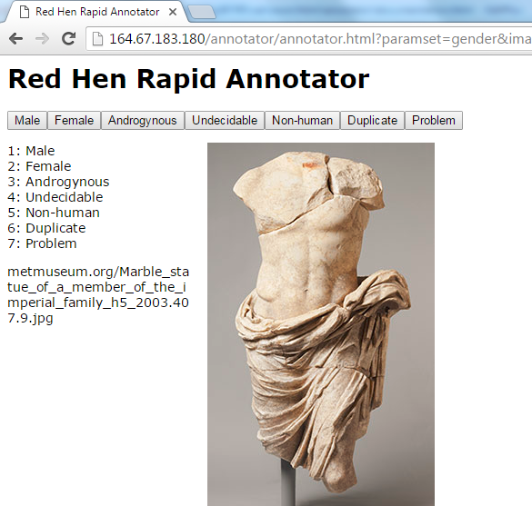

The Red Hen Rapid Annotator is designed to enable you to go through a large number of images in a very short period of time and to to get you started with minimal training. Nonetheless, it is vital that you read carefully through this document.
Once you log on with the personal link provided to you by your supervisor, you will see a screen such as the following:
On the left-hand side, you see the valid labels and the keys assigned to them, so in this case if the person depicted in the picture is male, you press 1 on your keyboard, if she is female, you press 2, and if the person has attributes from both genders, you press 3, and so on. You press 7 if there you really cannot figure out wich of the other options may suit this picture so that your supervisor can take a look at everything classified as problematic later. If you prefer to work with a mouse or a touch-device such as a tablet computer, you can also click the buttons at the top of the page. As soon as you press the key or the button, your annotation is saved to the server and the next picture is loaded. Below the list of annotations you find the filename. You can usually ignore this, but in case something goes wrong or your want to make a special note of that picture, you can copy the filename and paste it into an email to your supervisor for reference. If you have annotated all images, there will be a message in red in the place where the filename is usually located saying "No more images to annotate. Thank you!". This is the time to report back to your supervisor (and possibly ask for more work).
It is always possible to stop the annotation process and come back later. Simply close the browser window. To continue the process, just click on the link that your supervisor sent you. Never have the annotator open in more than one browser window or on more than one machine! You will end up doing many pictures twice if you do that. If you are not sure, just close the window and open the page again by clicking the link your supervisor sent you. This will force the website to re-initialize and verify what you have already done, so it will only present new images to you.
It is extremely important you carefully read the instructions sent to you by your supervisor. Often there are many possible interpretations of the set of labels presentend in the annotator. Make sure you interpret them in the way your supervisor meant you to! The labels in the annotator merely serve as a shorthand reminder to these more detailed instructions.
written 2016 by Peter Uhrig